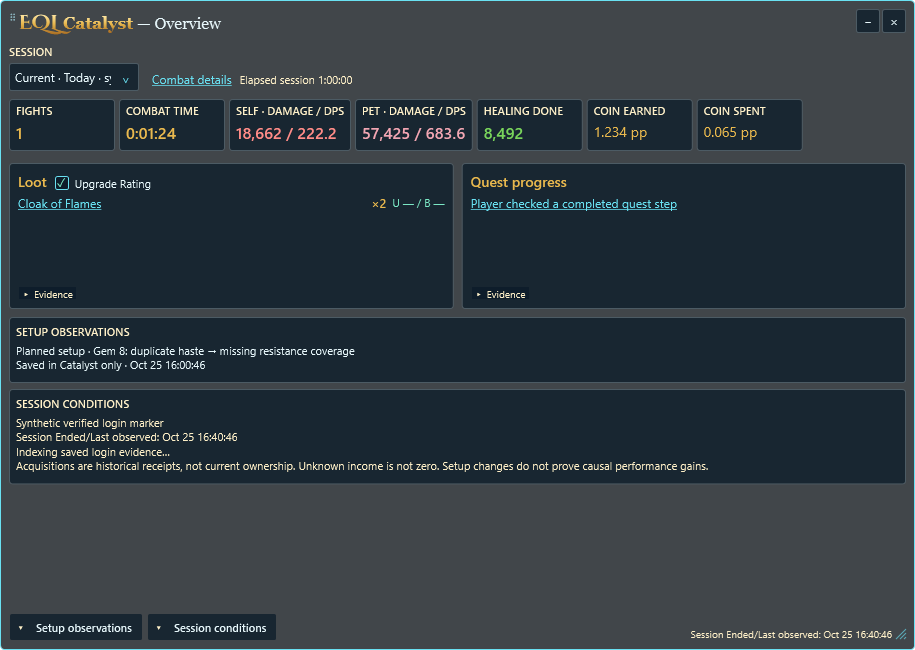
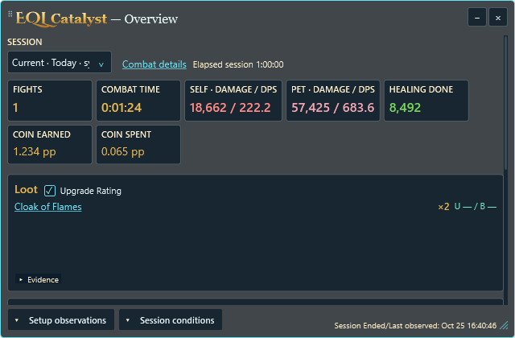
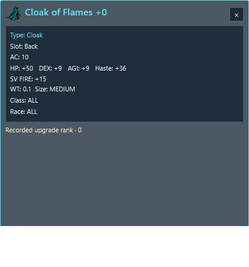
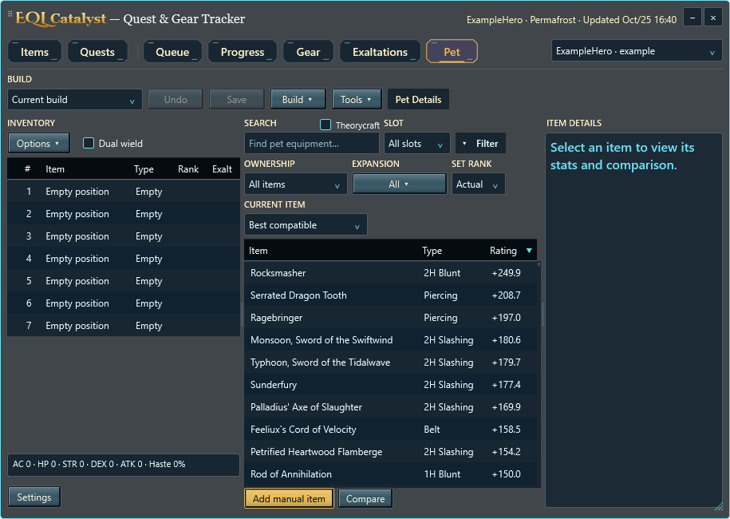
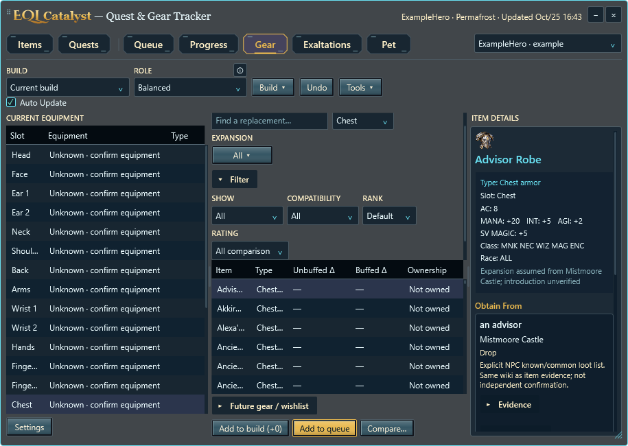
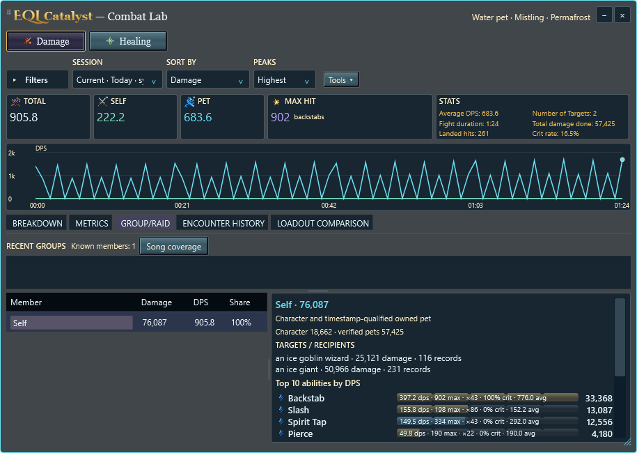
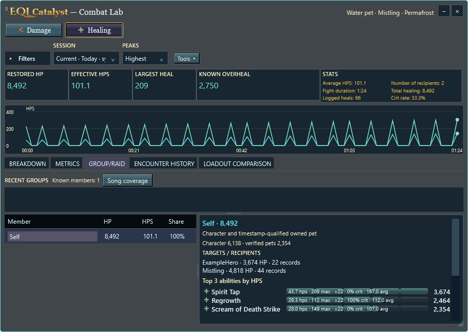

Actual Windows components with synthetic data. Final review covers three themes, normal/minimum windows and 100–300% synthetic rendering. Physical multi-monitor and live-game acceptance remain separate.
Coin earned and spent, optional U/B ratings, compact Evidence, and bottom status/actions.






